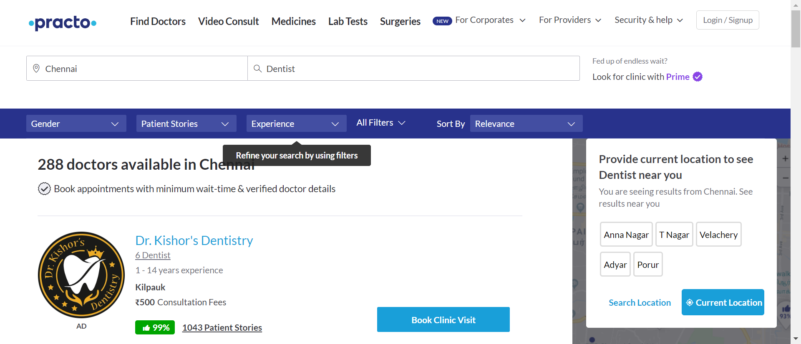
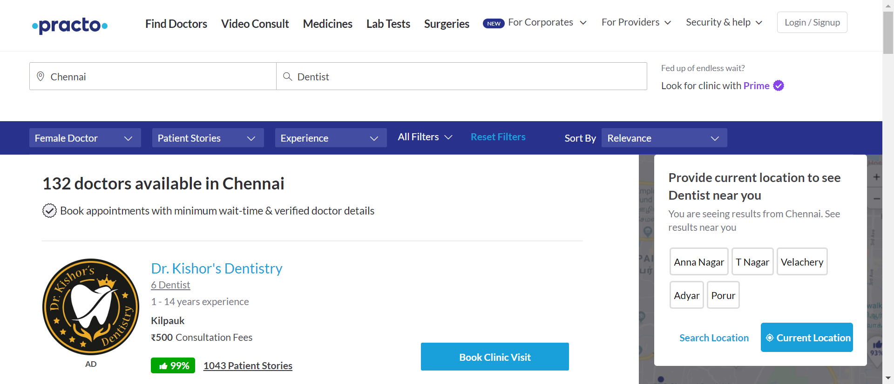
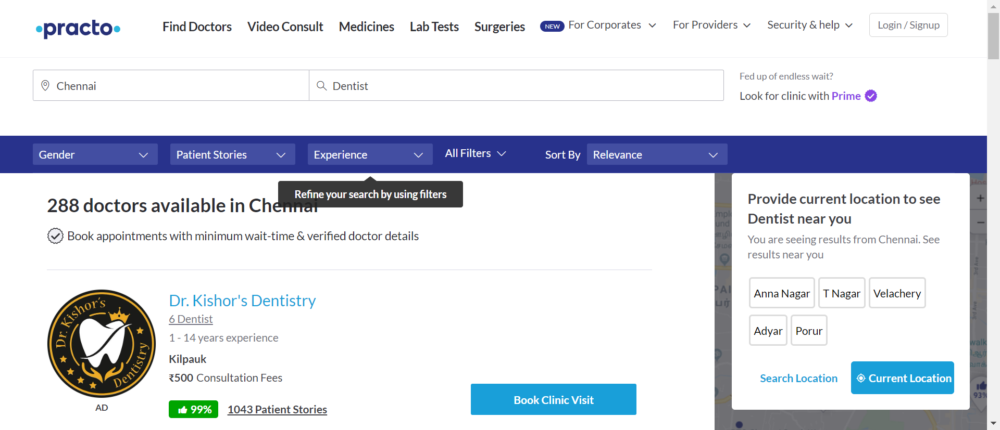
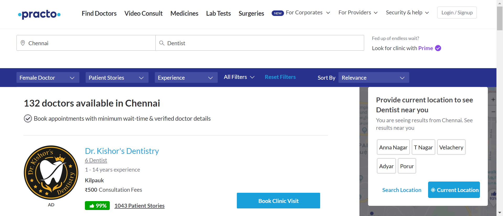
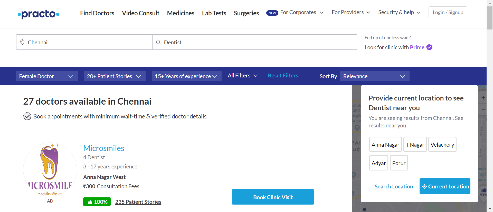
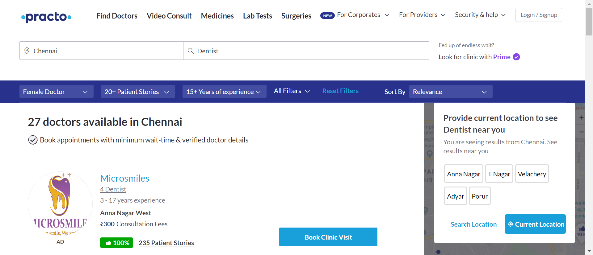

-
Finding Hospitals
12:05:28 PM / 00:01:55:247 Fail
Finding Hospitals
02.28.2024 12:05:28 PM 02.28.2024 12:07:24 PM 00:01:55:247 · #test-id=1FailUser searches for doctors with specific criteriaGiven the user navigates to practo comstepDefinitions.Hooks.Screenshot(io.cucumber.java.Scenario)User searches for doctors with specific criteria When the user validates the HomepageTitlestepDefinitions.Hooks.Screenshot(io.cucumber.java.Scenario)User searches for doctors with specific criteria
When the user validates the HomepageTitlestepDefinitions.Hooks.Screenshot(io.cucumber.java.Scenario)User searches for doctors with specific criteria Then the user Navigates to the Find Doctors pagestepDefinitions.Hooks.Screenshot(io.cucumber.java.Scenario)User searches for doctors with specific criteria
Then the user Navigates to the Find Doctors pagestepDefinitions.Hooks.Screenshot(io.cucumber.java.Scenario)User searches for doctors with specific criteria And the user selects the city ChennaistepDefinitions.Hooks.Screenshot(io.cucumber.java.Scenario)User searches for doctors with specific criteria
And the user selects the city ChennaistepDefinitions.Hooks.Screenshot(io.cucumber.java.Scenario)User searches for doctors with specific criteria And filters the search by DentiststepDefinitions.Hooks.Screenshot(io.cucumber.java.Scenario)User searches for doctors with specific criteriaWhen the user applies filters for GenderstepDefinitions.Hooks.Screenshot(io.cucumber.java.Scenario)User searches for doctors with specific criteriaAnd the user applies filters for patient storiesstepDefinitions.Hooks.Screenshot(io.cucumber.java.Scenario)User searches for doctors with specific criteria
And filters the search by DentiststepDefinitions.Hooks.Screenshot(io.cucumber.java.Scenario)User searches for doctors with specific criteriaWhen the user applies filters for GenderstepDefinitions.Hooks.Screenshot(io.cucumber.java.Scenario)User searches for doctors with specific criteriaAnd the user applies filters for patient storiesstepDefinitions.Hooks.Screenshot(io.cucumber.java.Scenario)User searches for doctors with specific criteria And the user applies filters for experiencesstepDefinitions.Hooks.Screenshot(io.cucumber.java.Scenario)User searches for doctors with specific criteriaAnd the user applies filters for feesAnd the user applies filters for availabilityStep skippedAnd sorts the result by some criteriaStep skippedThen the user should display the details of te first 5 doctorsStep skippedFailUser retrieves a list of surgeriesGiven user navigates to the practo home pagestepDefinitions.Hooks.Screenshot(io.cucumber.java.Scenario)When user clicks on surgeries in the practo home pageStep skippedThen user validates the surgeries pageStep skippedThen user scrolls down the pageStep skippedAnd user should capture the list of surgeriesStep skippedFailSchedule a demo in health and wellness plans for corporatesGiven the user navigates to practo pagestepDefinitions.Hooks.Screenshot(io.cucumber.java.Scenario)When user clicks on for corporates in practo home page navigation barStep skippedAnd user clicks health and wellness plans in for corporatesStep skippedThen user navigates to health and wellness plans page and validate the pageStep skippedWhen user provide invalid email id and valid details for other fields in the formStep skippedThen user validates schedule a demo button is enabled in the health and wellness plans pageStep skippedWhen user enters valid email id and clicks on schedule a demo buttonStep skippedThen user validates schedule a demo button is enabled in the health and wellness plans pageStep skippedThen user validates the Thank you message is displayedStep skippedThen user takes a screenshot of thank you messageStep skipped
And the user applies filters for experiencesstepDefinitions.Hooks.Screenshot(io.cucumber.java.Scenario)User searches for doctors with specific criteriaAnd the user applies filters for feesAnd the user applies filters for availabilityStep skippedAnd sorts the result by some criteriaStep skippedThen the user should display the details of te first 5 doctorsStep skippedFailUser retrieves a list of surgeriesGiven user navigates to the practo home pagestepDefinitions.Hooks.Screenshot(io.cucumber.java.Scenario)When user clicks on surgeries in the practo home pageStep skippedThen user validates the surgeries pageStep skippedThen user scrolls down the pageStep skippedAnd user should capture the list of surgeriesStep skippedFailSchedule a demo in health and wellness plans for corporatesGiven the user navigates to practo pagestepDefinitions.Hooks.Screenshot(io.cucumber.java.Scenario)When user clicks on for corporates in practo home page navigation barStep skippedAnd user clicks health and wellness plans in for corporatesStep skippedThen user navigates to health and wellness plans page and validate the pageStep skippedWhen user provide invalid email id and valid details for other fields in the formStep skippedThen user validates schedule a demo button is enabled in the health and wellness plans pageStep skippedWhen user enters valid email id and clicks on schedule a demo buttonStep skippedThen user validates schedule a demo button is enabled in the health and wellness plans pageStep skippedThen user validates the Thank you message is displayedStep skippedThen user takes a screenshot of thank you messageStep skipped
-
org.openqa.selenium.WebDriverException
3 tests
org.openqa.selenium.WebDriverException
3 failedStatus Timestamp TestName Fail 12:06:28 PM And the user applies filters for fees Finding Hospitals.User searches for doctors with specific criteria.And the user applies filters for feesFail 12:07:23 PM stepDefinitions.Hooks.Screenshot(io.cucumber.java.Scenario) Finding Hospitals.User retrieves a list of surgeries.stepDefinitions.Hooks.Screenshot(io.cucumber.java.Scenario)Fail 12:07:24 PM stepDefinitions.Hooks.Screenshot(io.cucumber.java.Scenario) Finding Hospitals.Schedule a demo in health and wellness plans for corporates.stepDefinitions.Hooks.Screenshot(io.cucumber.java.Scenario)
Started
Feb 28, 2024 12:04:59 PM
Ended
Feb 28, 2024 12:07:25 PM
Features Passed
0
Features Failed
1
Features
Scenarios
Steps
Timeline